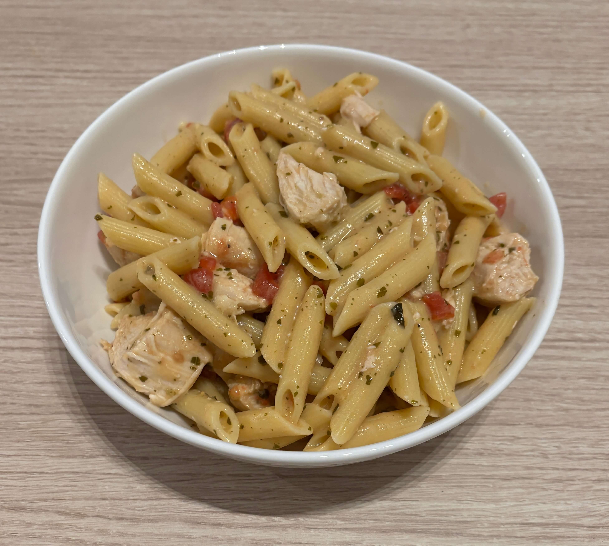

Home
Pesto Chicken Pasta

Ingredients
- 1lb pasta
- 1lb boneless skinless chicken breast
- 1 can campbells condensed cream of chicken soup
- 1/2 cup basil pesto
- 1/2 cup milk
- 1 cup cubed cherry tomatoes
Steps
- Brine the chicken for 15 min in warm/hot salt water.
- Cook the chicken in the oven at 450 degrees until the chicken reaches 165 degrees
- Cook the pasta according to the directions on the package
- Stir the soup, pesto sauce, and milk in a skillet and heat to a boil. Reduce the heat to low. Cook for 5 min. Stir in the pasta and cut up chicken.
- Season to taste and and stir in the halved tomatoes before serving